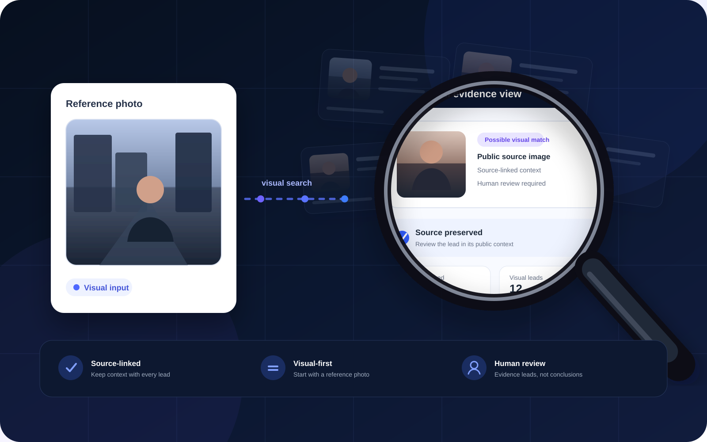

Upload a reference photo
Begin with one or more photos depicting the same person.
Visual-first public evidence search
TraceAI helps turn scattered public visual results into structured, source-linked evidence leads — so you can review possible matches with the original public context still attached.
Try TraceAI
How it works
Three simple stages keep the reference photo, public-source discovery and evidence review clearly separated.
Begin with one or more photos depicting the same person.
TraceAI gathers possible visual candidates and preserves where each route came from.
Possible matches stay attached to source links, context and review status.
What you review
A useful visual lead should tell you where it came from, how it was reached and what still needs human judgement.
Images that may be relevant to the reference photos.
The source page stays attached to the evidence lead.
Qualified leads, routes and technical candidates remain clearly separated.
Responsible use
TraceAI helps discover and organise public visual evidence leads. It does not automatically determine identity, ownership, infringement, illegality, or whether content should be removed.
Working prototype
Current work includes public-source discovery, visual candidate comparison, source-linked evidence cards, bounded route expansion and controlled vector-search infrastructure.